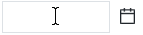
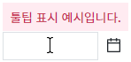
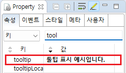

[InputCalendar] 컴포넌트에 마우스를 올릴 때 툴팁 표시하기
1개요
InputCalendar의 속성 'tooltip'의 설정에 따른 기능을 비교하는 예제입니다. 이 속성에 설정된 문자열이 있으면 컴포넌트에 마우스를 올릴 때 문자열이 툴팁으로 표시됩니다.
2구현된 기능
마우스-오버 시 툴팁 표시하지 않기
마우스-오버 시 툴팁 표시하기
3예제 테스트 방법
3.1마우스-오버 시 툴팁 표시하지 않기
STEP 1. InputCalendar에 마우스를 올립니다.
예제 영역 [(기본 설정 값) 마우스-오버 시 툴팁 표시하지 않기]에 구성된 InputCalendar에 마우스를 올립니다.그림 1.브라우저(Chrome) 실행 예시

STEP 2. 실행된 결과를 확인합니다.
툴팁이 표시되지 않습니다.
그림 2.브라우저(Chrome) 실행 예시
3.2마우스-오버 시 툴팁 표시하기
STEP 1. InputCalendar에 마우스를 올립니다.
예제 영역 [(기본 설정 값) 마우스-오버 시 툴팁 표시하기]에 구성된 InputCalendar에 마우스를 올립니다.그림 3.브라우저(Chrome) 실행 예시

STEP 2. 실행된 결과를 확인합니다.
툴팁이 표시됩니다.
그림 4.브라우저(Chrome) 실행 예시

4구현 예시
4.1마우스-오버 시 툴팁 표시하기
InputCalendar의 속성을 정의합니다.
[필수] tooltip="메시지"
예시) tooltip="툴팁 표시 예시입니다."
그림 5.웹스퀘어5 SP5 스튜디오의 Property View(속성창) 예시

[소스 코드 예시]
<!-- inputCalendar 의 소스 본문 예시 --> <w2:inputCalendar tooltip="툴팁 표시 예시입니다."> </w2:inputCalendar>
5주요 API
tooltip
6참고 문서
[웹스퀘어5 SP5 개발 가이드] InputCalendar
링크 : https://docs1.inswave.com/sp5_user_guide/8df43d1f59fab704#579244ff7483b50c
[웹스퀘어5 SP5 개발 가이드] 툴팁
링크 : https://docs1.inswave.com/sp5_user_guide/d2f8c22e9d5717c9